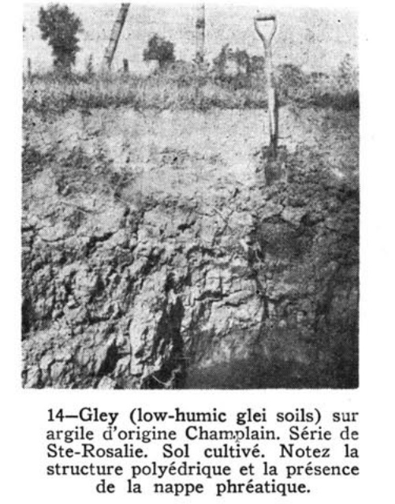
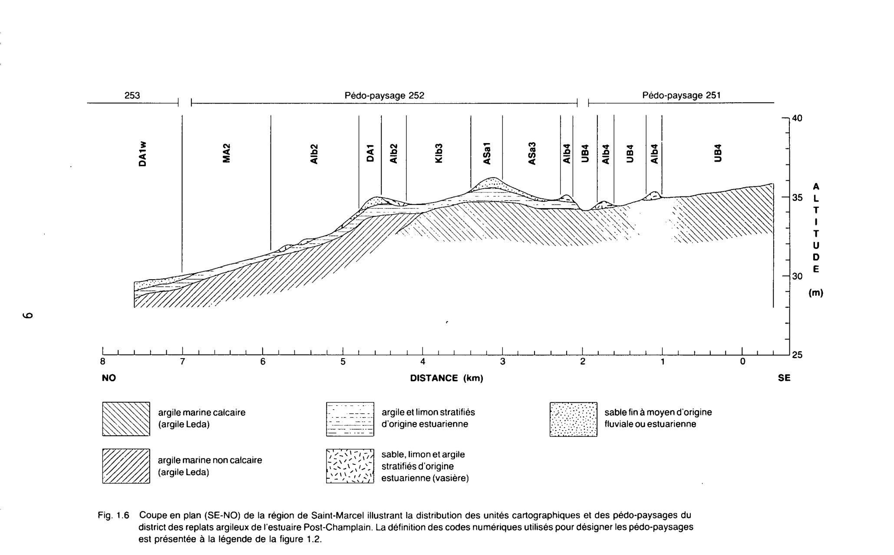
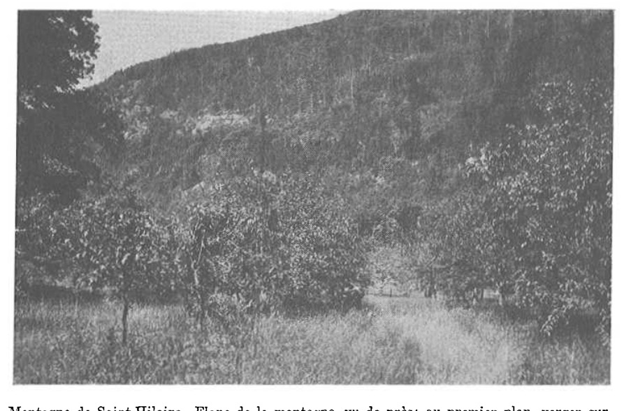
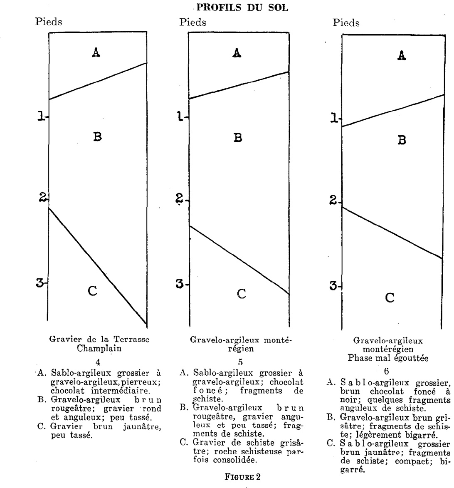
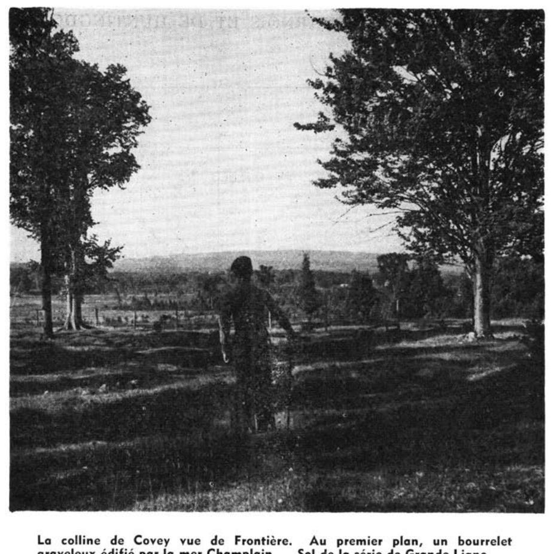
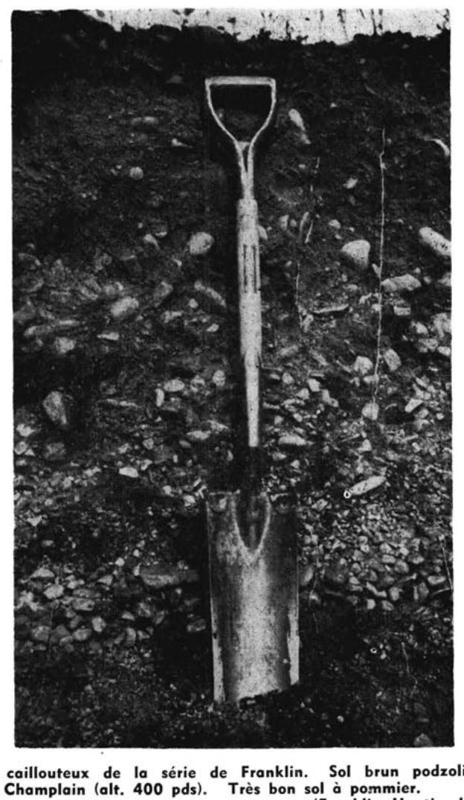

Identification & Caractéristiques Générales
La série de sols Champlain se développe sur des sédiments meubles d'origine marine et estuarienne mis en place lors de la submergement par la mer de Champlain dans les basses terres du Saint-Laurent. Le matériau parental est constitué de sédiments argileux lourds à texture très fine, riches en illite et en montmorillonite, caractérisés par une proportion supérieure à 60 % d'argile de couleur gris-bleu à gris olivâtre, souvent massive, plastique et collante, parfois recouverte d'une mince frange de surface remaniée par les courants post-glaciaires. Ces dépôts se retrouvent principalement en position topographique plane, horizontale à légèrement dépressive, au sein de la plaine sédimentaire régionale.
Le profil pédologique présente généralement une morphologie caractérisée par un drainage naturel déficient à imparfait et une perméabilité interne très faible induite par la nature argileuse du substrat. La compacité élevée des horizons sous-jacents restreint le mouvement vertical de l'eau et favorise l'établissement d'une nappe phréatique suspendue temporaire lors des périodes de fonte nivale ou de fortes précipitations. La réaction du sol varie de légèrement acide en surface à neutre ou alcalique en profondeur, en raison de la présence résiduelle de carbonates de calcium dans le parent marin. La structure est massive ou à tendance prismatique dans le solum, évoluant vers un faciès argileux plastique non pierreux.
Sur le plan agronomique, ces sols présentent des aptitudes élevées pour la production de grandes cultures, telles que le maïs, le soya et les céréales, ainsi que pour les cultures fourragères, sous réserve d'une gestion hydrique adéquate. Les principales limitations découlent de la lenteur de l'égouttement superficiel, de la portabilité réduite du matériel agricole en période humide et de la sensibilité au compactage lors des interventions hâtives au printemps. L'aménagement requis repose obligatoirement sur l'installation d'un réseau serré de drainage souterrain (tuyauterie latérale) combiné à un travail cultural raisonné pour éviter la formation de semelles de labour et préserver la structure de surface.
Classification Taxonomique & Environnement Pédologique
| Ordre Pédologique | Gleysolique |
|---|---|
| Grand Groupe (SCSS) | Gleysol humique |
| Sous-Groupe Taxonomique | Gleysol humique régosolique |
| Famille Pédologique | Loameuse-grossière, mixte sableux, neutre |
| Mode de Dépôt Parental | Alluvion récente |
| Classe de Drainage Naturel | Mal drainé |
| Régime Thermique & Humidité | Frais / Subaquique |
Description Morphologique du Profil Type
Séquences génétiques des horizons pédologiques caractérisant le profil type représentatif de la série Champlain :
Profil cultivé (agricole) — Comté de Champlain
✓ Source : Comté de Champlain — Page 20Couleur Munsell : 10YR 2/2
Structure & Consistance : Polyédrique à granulaire
Description morphologique : Loam limoneux humifère brun très foncé à noir (10YR 2/2 - 2/1); pH : 5.0.
Couleur Munsell : 5Y 5/2
Structure & Consistance : Polyédrique à granulaire
Description morphologique : Loam sableux gris olive à olive (5Y 5/2 - 5/3); pH : 4.8 - 5.2.
Profil naturel (vierge) — Comté de Champlain
✓ Source : Comté de Champlain — Page 49Couleur Munsell : 5YR 3/4, 2.5Y 3/2
Structure & Consistance : Polyédrique à granulaire
Description morphologique : Débris de feuilles et d'aiguilles de conifères non décomposées brun rouge foncé, à brun gris très foncé (5YR 3/4 - 2.5Y 3/2); pH : 5.6.
Couleur Munsell : 10YR 6/4, 7.5YR 5/6
Structure & Consistance : Granulaire
Description morphologique : Sable fin brun jaune pâle à brun vif (10YR 6/4 - 7.5YR 5/6); structure granulaire; très perméable; pH : 5.2.
Couleur Munsell : 7.5YR 7/6
Structure & Consistance : Polyédrique à granulaire
Description morphologique : Sable fin jaune rouge (7.5YR 7/6); pH : 5.3.
Couleur Munsell : 10YR 6/1
Structure & Consistance : Polyédrique à granulaire
Description morphologique : Sable fin gris à brun pâle (10YR 6/1 - 6/3); pH : 5.2.
Profil cultivé (agricole) — Comté de Portneuf
✓ Source : Comté de Portneuf — Page 45Couleur Munsell : 10YR 2/1, 10YR 4/2
Structure & Consistance : Polyédrique à granulaire
Description morphologique : Loam limoneux (parfois matière organique à demi-décomposée très épaisse) noir à brun très foncé (10YR 2/1 à 2/2 h), brun-gris foncé à brun-gris (10YR 4/2 à 5/2 s) ; granulaire ; friable ; racines abondantes, fines à microscopiques, non-orientées ; limite distincte, ondulée ; pH : 7.0.
Couleur Munsell : 5Y 5/2, 2.5Y 6/2
Structure & Consistance : Polyédrique à granulaire
Description morphologique : Loam sableux fin gris-olive (5Y 5/2 h), gris-brun clair (2.5Y 6/2 s) ; taches assez nombreuses, petites, distinctes ; polyédrique sub-angulaire ; friable ; racines peu abondantes, très fines à microscopiques, verticales ; pH : 7.3.
Profil cultivé (agricole) — Comté de Québec
✓ Source : Comté de Québec — Page 21Couleur Munsell : 10YR 2/1, 10YR 4/2
Structure & Consistance : Polyédrique à granulaire
Description morphologique : Loam limoneux (parfois matière organique à demi-décomposée très épaisse) noir à brun très foncé (10YR 2/1 à 2/2 h), brun-gris foncé à brun-gris (10YR 4/2 à 5/2 s); granulaire; friable; racines abondantes, fines à microscopiques, non-orientées; limite distincte, ondulée; épaisseur de 20 à 24 cm; pH : 7.0.
Couleur Munsell : 5Y 5/2
Structure & Consistance : Polyédrique à granulaire
Description morphologique : Loam sableux fin gris-olive (5Y 5/2 h), gris-brun clair (2.5Y6/2 s); taches assez nombreuses, petites, distinctes; polyédrique subangulaire; friable; racines peu abondantes, très fines à microscopiques, verticales; pH : 7.3.
Profils Photographiques & Planches de Terrain
Documents iconographiques, figures pédologiques et coupes de terrain documentées dans les mémoires d'inventaire pour de la série Champlain :








Propriétés Physico-Chimiques & Analyses de Laboratoire
| Horizon | Prof. (pces/cm) | Sable % | Limon % | Argile % | pH | C % | N % | Ca éch. | Mg éch. | K éch. | H+ éch. | Bases tot. | C.E.C. (meq/100g) | Saturation % |
|---|---|---|---|---|---|---|---|---|---|---|---|---|---|---|
| Ap | 7" | 20.8 | 67.6 | 11.6 | 5.0 | 8.66 | 0.33 | 2.5 | 1.8 | 0.13 | 9.2 | 4.4 | 13.6 | 32.3 |
| Cg | 64.4 | 31.6 | 4.0 | 6.0 | 0.21 | 0.01 | 1.0 | 2.4 | 0.05 | 0.0 | 3.5 | 3.5 | 100.0 |
Particularités Régionales, Phases & Variantes Pédologiques
Déclinaisons régionales, faciès texturaux, phases d'érosion ou de pierrosité et variantes cartographiées par étude pour de la série Champlain :
| Étude Régionale | Symbole | Appellation / Phase / Variante | Différenciation avec la série type (Analyse pédologique) |
|---|---|---|---|
| Comté de Champlain | Cm |
Champlain loam limoneux | Modalité modale de référence (type de base de la série). |
| Comté de Portneuf | Cm |
Champlain loam limoneux | Conforme à la série type de référence (caractéristiques texturales et drainage identiques). |
| Comté de Québec | Cm |
Champlain loam limoneux | Conforme à la série type de référence (caractéristiques texturales et drainage identiques). |
Distribution Pédo-Paysagère & Représentativité Cartographique (Couverture PPS 2026)
- Chaloupe loam limoneux (COP) — co-occurrente dans 14 polygone(s)
- Saint-Laurent loam limono-argileux (SIE) — co-occurrente dans 2 polygone(s)
- Brandon argile (BDO) — co-occurrente dans 2 polygone(s)
Aptitudes Agronomiques, Hydropédologie & Conservation des Sols
Indicateurs Hydropédologiques & Vulnérabilité à l'Érosion (BDHP 2026)
Interprétation BDHP : Potentiel de ruissellement modérément faible. Infiltration modérée avec textures moyennes à modérément grossières.
Classement selon l'Inventaire des Terres du Canada (ITC / CLI) : Classe 2w.
- Potentiel agricole : Terroir adapté aux cultures régionales selon la texture dominante et la régie de drainage.
- Contraintes majeures : Mal drainé. Risque d'engorgement temporaire ou d'excès d'eau printanier.
- Gestion & Aménagement : Drainage souterrain ou superficiel préconisé sur les terres planes. Chaulage et apport organique régulier selon les bilans agronomiques.
- Cultures adaptées : Grandes cultures (maïs, soya, céréales), prairies fourragères et cultures maraîchères selon le contexte géomorphologique.